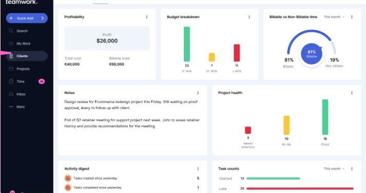
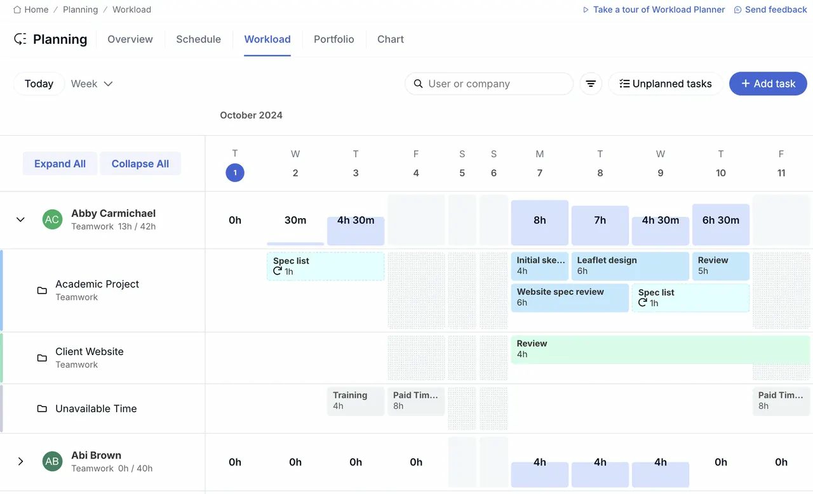
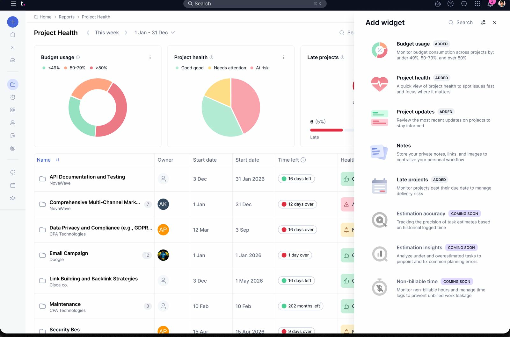

Teamwork Review: Built for Client Work, Priced in Two Halves
How we reviewed it: No first hand use is claimed. Facts from Teamwork's public pages. What the labels mean
6.7 We Used It Score, out of 10
Ratings by business type
Best suited to: agencies, consultancies, IT services and professional services firms delivering client work against time and budgets.

The short answer
Teamwork is project management for businesses that sell their time: agencies, consultancies and professional services firms that need timesheets, retainers, invoicing and workload planning wrapped around the task list. Its reviewer sweet spot is firms of roughly 10 to 50 people whose client work has to carry a margin. The pricing tells the same story in two halves: the lower tiers are published and reasonable, while the tiers holding the serious agency financials hide behind a book a demo button.
What it is
Teamwork (teamwork.com) now describes itself as a professional services automation platform, and the description fits. Projects and tasks sit at the center, with time tracking, budgets, retainers, proofs and invoicing around them. It holds 4.4 out of 5 on G2 from around 1,200 reviews, which in this series puts it level with Asana for general regard.
Where it wins, on the consensus
- Client work economics. Time budgets, billable time, retainer tracking and invoicing live in the same system as the delivery work, so a firm can see whether a client is profitable without exporting anything to a spreadsheet at month end
- Unlimited free client users. Invite clients and freelancers into projects without burning paid seats. For an agency, that single policy removes the most annoying line item in per seat pricing
- The basics are honestly priced. Free covers up to 5 users and 5 projects; Basics is $9.99 per user per month billed yearly with a 3 user minimum; Accelerate at $24.99, minimum 5 users, is where timesheets, workload planning and invoicing properly arrive, and reviewers name it the practical tier
- Workload and capacity views that suit a services firm juggling people across clients

Where it frustrates, on the consensus
- The top of the range is a sales conversation. Optimize and Enterprise are quote only, and Optimize is where timesheet approval, cost and fixed fee budgets and multi currency invoicing live. A firm can therefore outgrow the published prices precisely when its finance needs get serious, and discover the real number on a call
- Seat minimums on the paid tiers, 3 then 5, in the now familiar pattern. Small teams pay for chairs they have not hired yet
- It is a lot of platform for internal projects. A business that does not bill clients is carrying invoicing, retainers and PSA machinery it will never switch on
- Onboarding at the serious end is a service, with implementation packages running from free self led to several thousand dollars. This is a considered purchase, not a Friday experiment
A note on our own first impression, since it started this review: landing on Teamwork's site, the absence of full pricing and the book a call route read as corporate, enterprise software. The consensus refines that. The lower half of the range is published and mid market; the corporate behavior is real, but it lives at the top of the range, where the financial features are.
The AI, and its price tag
AI Essentials (summaries and a project and task wizard) is included on Basics; AI Advanced, with utilization insights, sits on Accelerate; and usage based AI credits have been announced with no published price at the time of writing. Our duplication warning applies to the summarizing features if you already pay for a general AI subscription; the utilization insight is Teamwork's own data at work, which is the defensible kind.
Reporting and dashboards

Reporting is built for the client services question, are we making money on this work: time, budgets, profitability and workload, with the deepest financial reporting on the quote only Optimize tier. For showing executives the state of client delivery, it is one of the stronger stories in this series. For a solo or internal team, most of it is machinery pointed at a problem you do not have.
Pricing
Checked November 2026. Free $0 (5 users, 5 projects). Basics $9.99 per user per month billed yearly, minimum 3 users. Accelerate $24.99, minimum 5 users. Optimize and Enterprise: book a demo. Older reviews still cite the retired Deliver and Grow tier names, which is a useful reminder to read prices on the vendor's page and not in roundups, including ours: check before you buy.
Try it:
Visit TeamworkVerdict
The specialist in this series. If your business sells hours and projects to clients, Teamwork's shape matches your economics in a way the generalists do not, and the free client users policy is genuinely classy. If you do not bill clients, its center of gravity is elsewhere, and if you need its financial top tier, budget for a sales conversation and ask the seat and onboarding questions early.
Try it: Visit Teamwork
Research note: Built from vendor pricing and comparison pages, G2 data and published reviews, checked November 2026. Research only: no first hand use is claimed.
Watch: the official video
“Teamwork.com: Workload Planner”, from the official Teamwork YouTube channel.